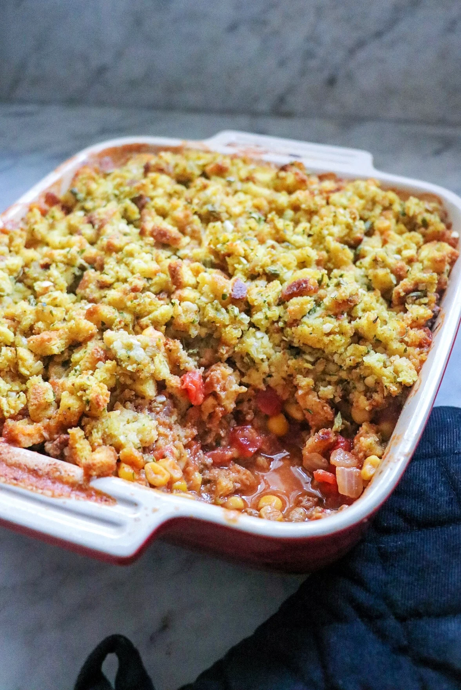

Mexican Ground Beef Casserole

Description
I created this Mexican ground beef casserole when I wanted something different
that I could make ahead if I wanted to. Double the recipe for company!
Ingredients
- 1 pound ground beef
- 1 small onion, finely chopped
- 1 1/2 cups water
- 1/4 cup salter butter
- 1 (6 ounce) package cornbread stuffing mix (such as Kraft® Stove Top®)
- 1 (14.5 ounce) can diced tomatoes with jalapeno
Steps
-
Heat a large skillet over medium-high heat. Cook and stir ground beef
and onion in the hot skillet until beef is browned and crumbly, 5 to 7 minutes. Drain and discard grease.
-
While the beef is cooking, make stuffing. Bring water and butter to a boil in a
medium saucepan. Stir in stuffing mix; cover. Remove from heat. Let stand for 5 minutes. Fluff with a fork.
-
Stir diced tomatoes, chili powder, cumin, and hot sauce into the beef mixture. Simmer for 2 minutes.
Add corn and Cheddar cheese. Simmer until cheese is melted completely, about 1 minute. Transfer mixture to
a casserole dish. Spread cornbread stuffing evenly over the top.
-
Bake in the preheated oven until browned, 20 to 30 minutes.